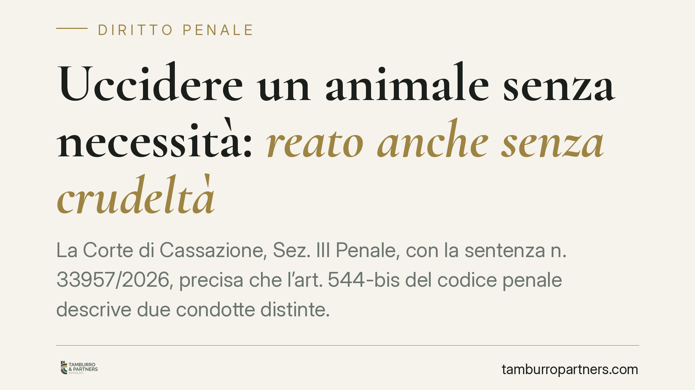

Uccidere un animale senza necessità: reato anche senza crudeltà
La Corte di Cassazione, Sez. III Penale, con la sentenza n. 33957/2026, precisa che l'art. 544-bis del codice penale descrive due condotte distinte. Uccidere un animale "per crudeltà" richiede un dolo specifico; ucciderlo "senza necessità" richiede solo il dolo generico. La differenza incide sugli oneri probatori e amplia l'area del penalmente rilevante, con ricadute concrete per cacciatori e proprietari.

Il caso e la decisione
La vicenda nasce dall'uccisione di animali in circostanze prive di una giustificazione riconosciuta dall'ordinamento. La difesa sosteneva che, in assenza di una condotta caratterizzata da sofferenza inflitta volontariamente, il fatto non potesse configurare reato.
La Terza Sezione Penale ha respinto questa lettura. Ha chiarito che l'art. 544-bis c.p. punisce due comportamenti autonomi: l'uccisione commessa "per crudeltà" e quella commessa "senza necessità". Non si tratta di sinonimi, ma di due ipotesi con presupposti soggettivi diversi.
Inquadramento normativo
L'art. 544-bis c.p., introdotto dalla legge n. 189/2004, punisce con la reclusione da quattro mesi a due anni "chiunque, per crudeltà o senza necessità, cagiona la morte di un animale".
La congiunzione disgiuntiva "o" è il punto centrale della decisione. La norma individua due modalità alternative di realizzazione del reato.
Nel primo caso — uccidere "per crudeltà" — è richiesto il dolo specifico: l'agente deve agire con la precisa finalità di infliggere sofferenza, cioè mosso da un movente di gratuita malvagità. Occorre provare questo scopo particolare.
Nel secondo caso — uccidere "senza necessità" — è sufficiente il dolo generico: basta la coscienza e volontà di cagionare la morte dell'animale, unita all'assenza di una causa giustificatrice. Per "necessità" si intende qui una situazione riconosciuta dall'ordinamento (ad esempio la legittima difesa, lo stato di necessità, l'attività venatoria esercitata nel rispetto delle regole, la macellazione regolamentata).
Ne deriva un onere probatorio più lieve per l'accusa nella seconda ipotesi: non deve dimostrare la crudeltà, ma soltanto che l'animale è stato ucciso volontariamente e in assenza di una ragione giuridicamente valida.
Perché la distinzione conta
La pronuncia ha un effetto pratico rilevante: amplia l'area delle condotte punibili. Non serve dimostrare accanimento o sofferenza intenzionalmente prolungata. L'uccisione volontaria di un animale resta penalmente rilevante ogni volta che manca una giustificazione prevista dalla legge.
Viene così superata l'idea che l'art. 544-bis colpisca solo i comportamenti efferati. Il reato può configurarsi anche in presenza di una condotta rapida e priva di sofferenza, se non sorretta da una ragione legittima.
Implicazioni pratiche
Le categorie più esposte sono quelle che operano a contatto abituale con gli animali.
Per il cacciatore, l'esercizio dell'attività venatoria costituisce una "necessità" solo se svolto nel pieno rispetto della normativa di settore: periodi consentiti, specie cacciabili, autorizzazioni, modalità lecite. L'uccisione di un animale al di fuori di questi limiti — o di un animale non oggetto di caccia — perde la copertura giustificatrice e può ricadere nell'art. 544-bis anche senza crudeltà.
Per il proprietario di cani (o di altri animali), la responsabilità può emergere sia per condotte dirette sia in relazione al controllo sugli animali affidati. L'abbattimento di un animale, anche proprio, non è libero: deve trovare fondamento in una ragione riconosciuta (ad esempio l'intervento di un veterinario per gravi patologie).
La linea di confine è netta: in assenza di una giustificazione giuridica, la volontà di uccidere basta a integrare il reato.
Cosa fare in concreto
- Verificate sempre la liceità della condotta prima di qualsiasi atto che possa cagionare la morte di un animale: l'assenza di crudeltà non esclude la rilevanza penale.
- Documentate la necessità, quando ricorre: certificazioni veterinarie, autorizzazioni, rispetto dei calendari e delle regole venatorie sono elementi probatori decisivi.
- Nell'attività venatoria, rispettate rigorosamente specie, periodi e modalità consentite: ogni deviazione può far venire meno la copertura giustificatrice.
- In caso di contestazione, consigliamo di non rendere dichiarazioni prima di un confronto con un difensore: la qualificazione del fatto (dolo generico o specifico) incide sull'intera strategia.
- Conservate ogni elemento utile a ricostruire il contesto: le circostanze concrete sono spesso determinanti per valutare la sussistenza della necessità.
Un orientamento da monitorare
La sentenza n. 33957/2026 consolida un'interpretazione rigorosa dell'art. 544-bis c.p. Chi opera a contatto con gli animali farà bene a rivedere le proprie prassi alla luce della distinzione tra le due condotte, ricordando che la soglia di rilevanza penale è più bassa di quanto spesso si ritenga.
---
*Contributo informativo a cura di Tamburro & Partners - Avv. Giuseppe Tamburro. Non costituisce parere legale.*
Ogni condominio ha una storia a sé.
Se gestisci un'amministrazione e vuoi un confronto su una specifica questione condominiale, scrivi allo studio. Ti rispondiamo entro un giorno lavorativo.